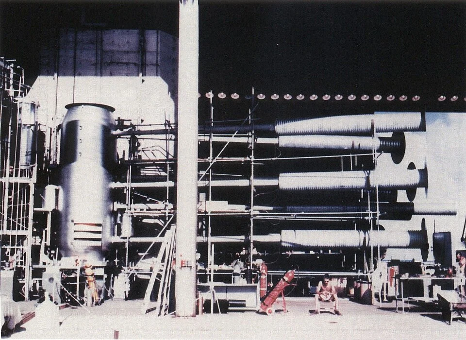
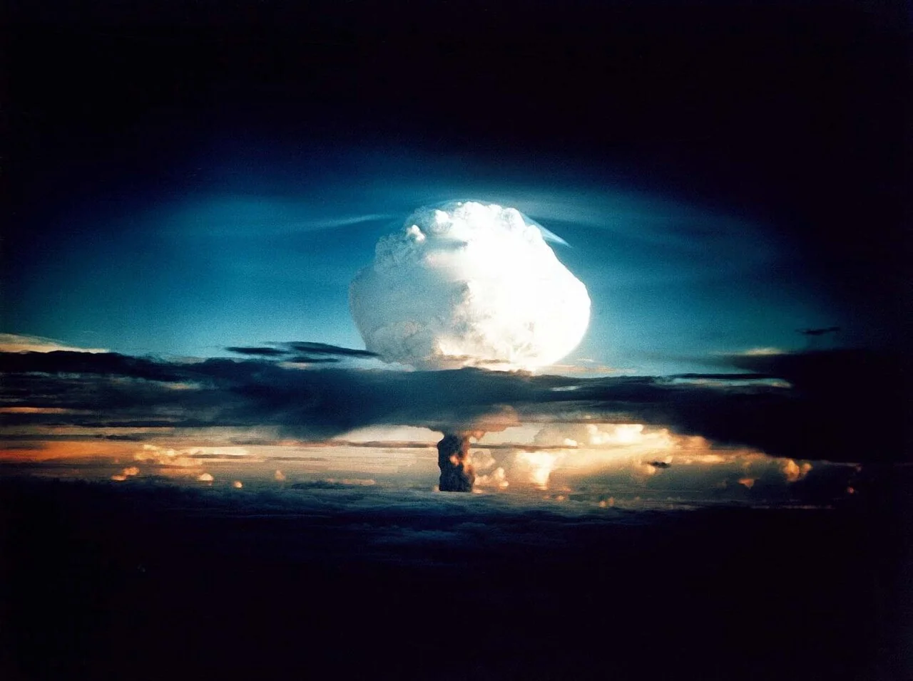
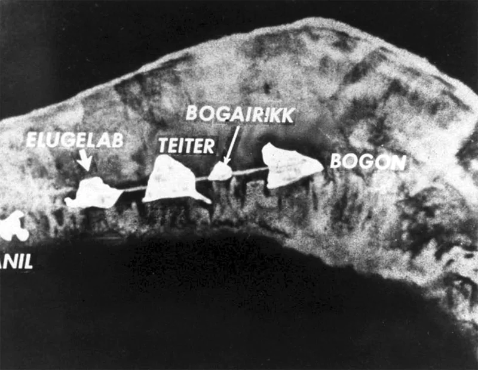
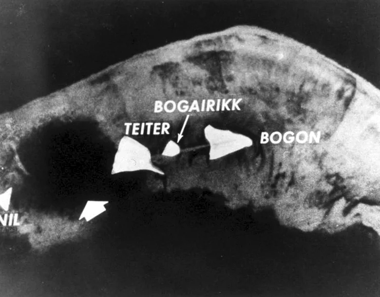
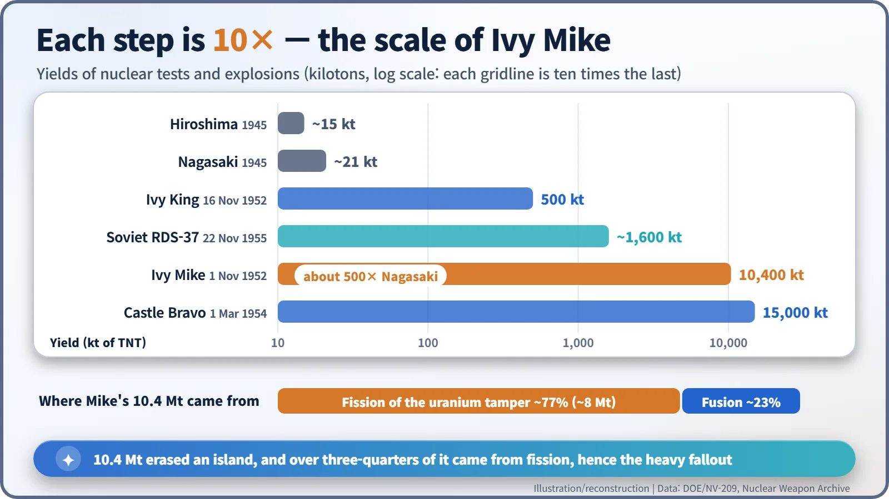
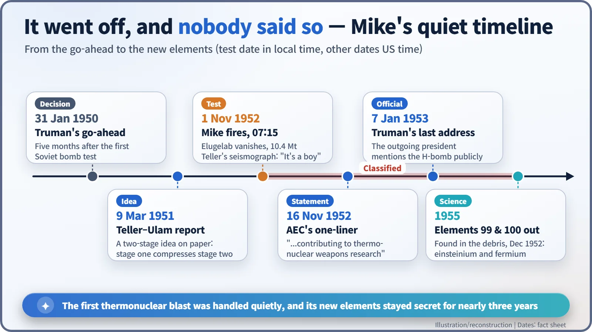

Nuclear History · 137
The Island That Fell Off the Map — Ivy Mike, the First Thermonuclear Test (1952)
A 74-tonne experiment yielded 10.4 megatons, about 500 times Nagasaki, mostly from fission, and was announced in a single line.
At 07:15 local time on 1 November 1952, the United States fired Ivy Mike at Enewetak Atoll, the first full-scale test of a two-stage thermonuclear device. It yielded 10.4 megatons, about 500 times the Nagasaki bomb, and wiped the island of Elugelab off the map. Yet it was a building-sized experiment, not a weapon, most of its energy came from fission, and the government announced it in a single line.
A needle in Berkeley
On the morning of 31 October 1952, in Berkeley, California, the physicist Edward Teller (1908–2003) spent Halloween not handing out candy but watching a seismograph. The needle had been tracing a calm, wavering line when it suddenly swung wide. The ripple had travelled through the Earth from the Pacific, roughly 8,000 km away. Teller sent a telegram to a colleague at Los Alamos: "It's a boy." By his own account in his memoirs, his message of success arrived hours before the official word. [1]
At the test site the calendar had already turned. In the time zone of Enewetak Atoll in the Marshall Islands it was 07:15 on 1 November 1952, and the world's first full-scale thermonuclear (hydrogen bomb) test, code-named Ivy Mike, had just gone off. [1] [2]
A Soviet bomb, a presidential order, and an election days away
After the Soviet Union tested its first atomic bomb in August 1949, President Harry S. Truman ordered work on the hydrogen bomb on 31 January 1950. The design was stuck until the spring of 1951, when Teller and Stanisław Ulam proposed a two-stage scheme: use the energy of a first-stage fission explosion to compress and ignite a second stage of fusion fuel. Their report is dated 9 March 1951. Mike was the first full-scale trial of that idea.
The presidential election was set for 4 November. A State Department advisory panel chaired by J. Robert Oppenheimer recommended postponing the test, but it went ahead on schedule.
Less a bomb than a factory: the "Sausage"
Nicknamed the "Sausage", Mike was not something you could load into an aircraft. Its fusion fuel was liquid deuterium chilled to about –250 °C, which meant a giant vacuum-flask-like container and a refrigeration plant. With that equipment it weighed about 74 tonnes and stood more than 6 m tall. The person who turned the idea into a workable experimental design was Richard Garwin (1928–2025), then just 23; the test itself was run in the field by Marshall Holloway (1912–1991). Teller did not go to the site. [4] [6]

10.4 megatons, and a missing island
About 9,350 military personnel and some 2,300 civilians took part in Operation Ivy. Mike's yield was 10.4 megatons, the equivalent of 10.4 million tonnes of TNT and about 500 times the roughly 21-kiloton Nagasaki bomb. The cloud climbed to about 17 km within 90 seconds. [1] [2]

The island of Elugelab was gone. In its place was an underwater crater about 1.9 km across and about 50 m deep (some records put the depth closer to 60 m). Atomic Energy Commission (AEC) chairman Gordon Dean is said to have told President-elect Dwight Eisenhower, "The island of Elugelab is missing!" The line is widely quoted, though sources differ on exactly when and how it was delivered. [2]


A "hydrogen" bomb that was three-quarters fission?
Despite the name, fusion supplied only about 23% of the energy. The remaining 77% or so, about 8 megatons, came from the natural-uranium casing around the device (the tamper), which split when struck by fast neutrons from the fusion reactions. All that fission also meant heavy fallout: radioactive debris landed on ships tens of kilometres away. [1]

A quiet statement, and new elements in the fallout
The government said almost nothing. The AEC's statement of 16 November amounted to a single line: the test programme "included experiments contributing to thermonuclear weapons research." Truman did not mention the hydrogen bomb publicly until his final State of the Union message on 7 January 1953. [3] [4]
Even the scientific by-products were secret. Albert Ghiorso's team at Berkeley, analysing filter paper from aircraft that had flown through the cloud, identified elements 99 and 100 in December 1952. They had formed when uranium-238 swallowed 15 neutrons in an instant and then went through a chain of beta decays; the first sample of element 99 amounted to fewer than 200 atoms. The discovery was made public only in 1955, when the elements received their names: einsteinium and fermium. [5]

What a proof, not a weapon, left behind
Mike could never have been used as a weapon; it was an experiment the size of a building. But proving that the two-stage principle worked changed the pace of the arms race. Tests of practical designs that needed no liquid cooling, and the Soviet response, soon followed. The people of Enewetak had already been moved to another atoll at the end of 1947, and the cost of having their home turned into a test site remained an issue for the region for decades.
One swing of a seismograph needle, and one island erased from the map. Ivy Mike was the first time a human-made explosion visibly reshaped the geography of the Earth.